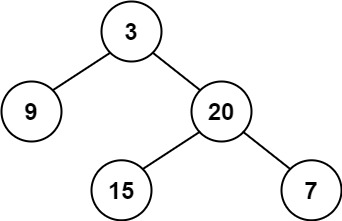
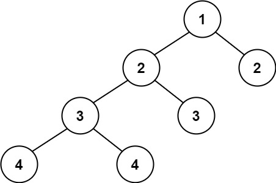

110. 平衡二叉树
自底向上后序：递归返回高度，左右高度差 > 1 就用 -1 当哨兵，上层见到 -1 立刻短路剪枝。
思路
height(node)返回子树高度：空结点 0，正常max(左, 右) + 1，叶子自然得 1。- 左或右返回 -1（下面已不平衡），本层立刻原样返回 -1，剩下的不用再算。
- 左右高度差超过 1，也返回 -1；三个检查顺序别乱，
-1要在比差之前拦住。 - 顶层
height(root) != -1就是答案；空树高度 0，自然是平衡的。
图解
最优解
1class Solution {2 public boolean isBalanced(TreeNode root) {3 return height(root) != -1;4 }5 6 // 返回子树高度；发现不平衡就返回 -1 一路短路7 private int height(TreeNode node) {8 if (node == null) return 0;9 int left = height(node.left);10 // 左边已经不平衡，右边不用算了11 if (left == -1) return -1;12 int right = height(node.right);13 // 右边已经不平衡，也不用再比14 if (right == -1) return -1;15 // 左右高度差超过 1：本子树不平衡16 if (Math.abs(left - right) > 1) return -1;17 return Math.max(left, right) + 1;18 }19}题目
给定一个二叉树，判断它是否是 平衡二叉树
示例 1：

输入：root = [3,9,20,null,null,15,7] 输出：true
示例 2：

输入：root = [1,2,2,3,3,null,null,4,4] 输出：false
示例 3：
输入：root = [] 输出：true
提示：
- 树中的节点数在范围
[0, 5000]内 -104 <= Node.val <= 104
题面取自力扣当前版本。
数据快照 2026-11-04。题面版权归力扣所有，本站点仅供本人学习使用，请勿对外发布。